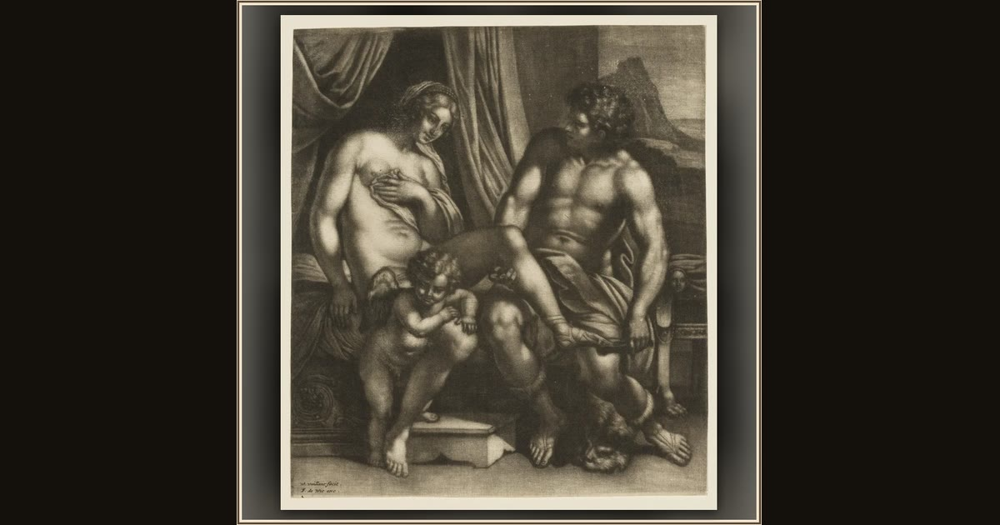

Venus and Anchises, accompanied by Cupid
Wallerant Vaillant · 17th century · met
Venus and Anchises sit with Cupid on a couch beside a lion skin; the hymn describes their approach to a couch spread with skins Anchises hunted (159–161) Explore its place in Homer's The Homeric Hymns, Hymn 5 · To Aphrodite, line 161.